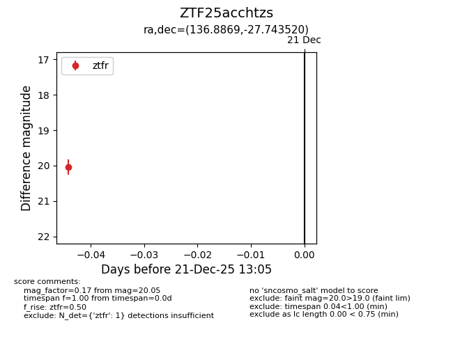
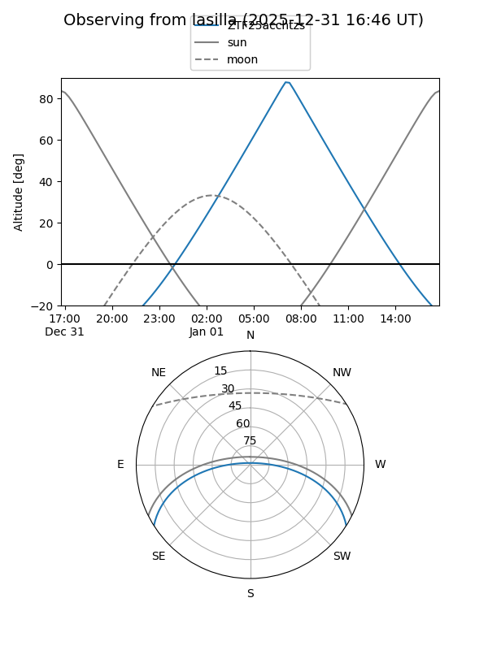
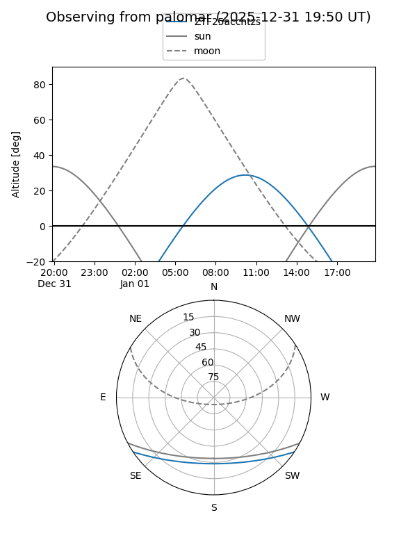

ZTF25acchtzs
Target ZTF25acchtzs at 2025-12-31 17:00
Aliases and brokers:
FINK:
Lasair:
ALeRCE:
alt names
ZTF25acchtzs (ztf,fink_ztf)
Coordinates:
equatorial (ra, dec) = 136.8869,-27.74352
equatorial (HMS+DMS) = 09:07:32.84,-27:44:36.67
galactic (l, b) = (254.0436,+13.20921)
Flags:
Photometry:
last ztfr=20.05
1 ztfr detections
Lightcurve

Visibility


Additional plots